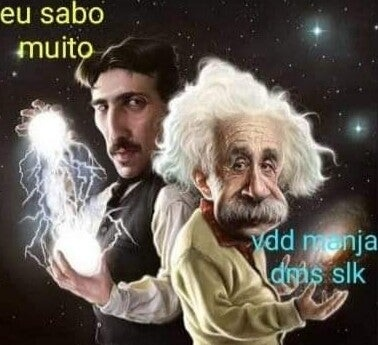
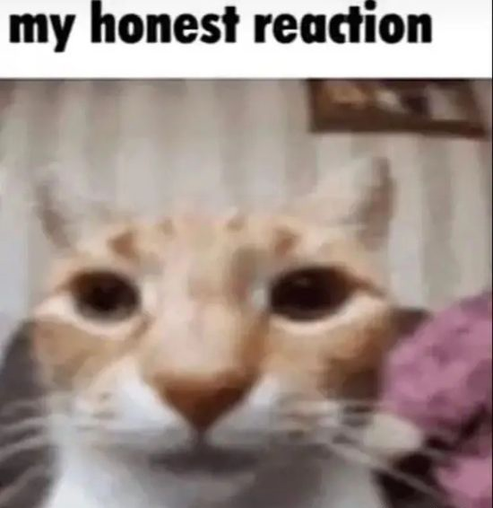
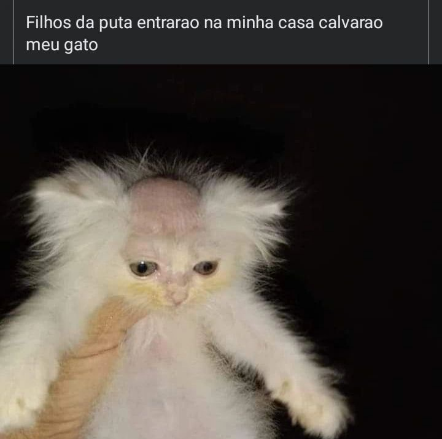
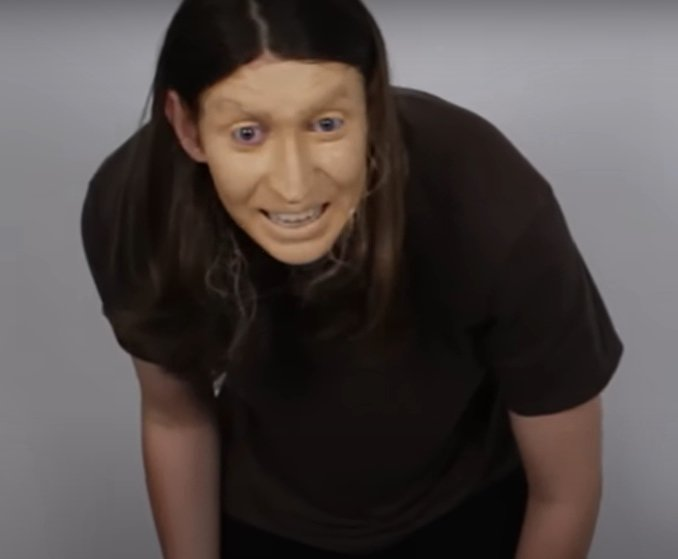

Humor internet 2023(Muito ruim por sinal, e todas foram retiradas de um site obscuro, chamado "Ifunny")
4°sabo muito
Uma imagem que indica grande sabedoria, seu criador é desconhecido.
3°Gato serio fudido my honest reaction
Um gato muito serio, por motivos desconhecidos.
2°Gato calvo
Como demostrado na imagem, o gato foi calvado.
infelizmente o autor do crime está foragido até os dias de hoje.
1°Felca la creatura
Uma das imagens mais pertubadoras da internet, o felca la creatura é uma criatura extremamente hostil e perigosa,
essa é uma imagem rara dessa criatura, mas cuidado, não durma com os pés descobertos, pois algo não muito agradavél pode acontecer...